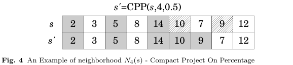

This neighborhood is similar to Compact Project on Extreme (CPE), its purpose is to compact a project p given a compaction percentage perc, where the compaction order occurs in reverse of sequence S.
To perform this process, it is necessary to receive as a parameter the allocations sequence S, the compaction percentage perc and the project p to be compacted.
At first step, it is calculated the number of jobs in p that will be compacted relative to perc, just after are identified the indexes of the last idxEnd and first idxStart jobs of p allocated, taking into account the number of jobs that will be compacted starting at the end of S. Jobs belonging to p allocated at this interval are stored in the vector M1.
After setting indexes, all jobs with smaller indexes than idxStart are added to vector L and all jobs with bigger indexes than idxEnd are added to vector R. The other jobs within the range idxStart and idxEnd not belonging to project p are added to vector M2.
After completing this first step, it is necessary unite all jobs contained in M1, M2, L and R. Initially, the sequence is rebuilt including all jobs of L, representing jobs allocated before idxStart. Soon after, are added all jobs of M1, containing jobs compacted of p and then are added jobs of M2, containing jobs that prevented the compression of project jobs p. Finally, jobs of R are added, containing all jobs allocated after idxEnd.
Figure 4 shows the movement made by this neighborhood. In this example, the method receives as parameter the project 4 and the compaction percentage 0.5. As the project has five jobs, the percentage of 50% indicates a compaction of 2.5 jobs beginning of the end. The jobs to be compacted are respectively 9 and 10. All jobs pertaining to project p4 are colored in gray.
